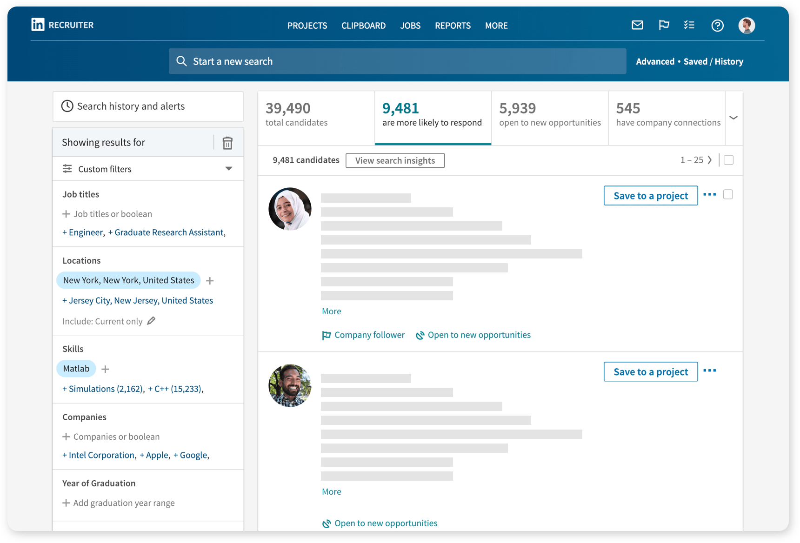
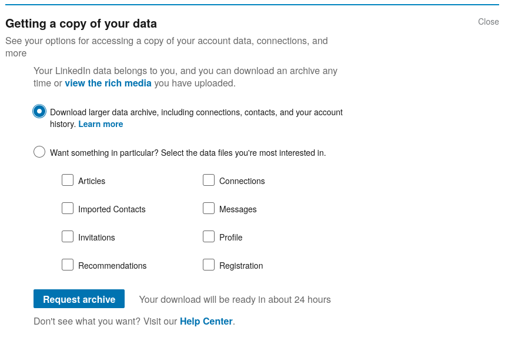
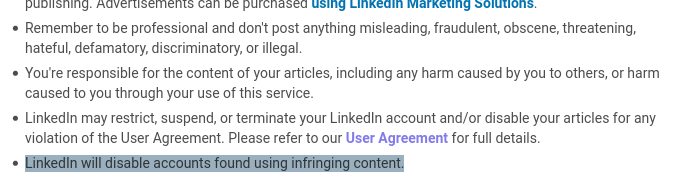
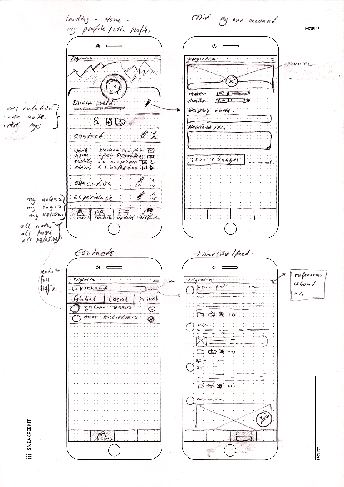

Werktitel “Physalia”
Een decentrale LinkedIn
Bèr berkes Kessels
You are the product

You are locked in

One-size-fits-all (Cultural imperialism)

Verder
- Linkedin kan niet intern ingezet worden in organisaties of netwerken.
- Linkedin is onhandig als CRM.
Oplossing: Inleiding
:::notes * 00:00 - 3:34 - intro.
Oplossing: Concreet
- Zakelijk Sociaal netwerk met zwaartepunt op cooperatie en onderlinge relaties.
- Gedecentraliseerd: Federated, zelf-gehost: Ieder netwerk een “server”.
- Gebruikers hebben interactie met elkaar over servers heen.
Voordelen
- Ad-free.
- Privacy-focused.
- In-house inzetbaar.
- Voorspelbaar en simpel: geen algorithmes.
- Jou gegevens en attributen kunnen per netwerk verschillen.
Vergezicht
- Een Business-oriented sociaal netwerk, met focus op privacy en cooperatie.
- Elke deelnemer kan het als zijn eigen CRM inzetten.
- Draai je eigen intern sociaal network.
- Jij bent de eigenaar van je professioneel profiel.
- Jij presenteert delen van jou professioneel profiel op allerlei diverse netwerken.
Doelgroepen
- Mensen in de fediverse: privacy minded, bekend met decentralisatie.
- Deelnemers aan ZZP-, flexwerk- of ander zakelijke netwerken.
- Faciliteerders van zulke netwerken.
Pysalia
Het Portugees oorlogsschip (wetenschappelijke naam: Physalia physalis) is een complexe kolonie van honderden poliepen van vier typen.
Eerste Halte
- Een fork van mastodon met een andere interface. Focus op ‘deelnemers’ en profiel. Social feed blijft bestaan.
- Je profiel bevat contactgegevens.
- Je profiel wordt een “resumé”: Opleiding, Ervaring, Kennis etc.
- Je kan mensen “volgen” (social feed).
- Je kunt relaties naar anderen bijhouden: “John worked with Anne from Jan to Oct for project X”
- Je kunt personen taggen, en notities bijhouden op personen.
Daarna richting (eindstation?):



Business Model
- Hosting voor organisaties (€5 - €20/maand/instance)
- Maatwerk voor organisaties (€x/uur + hosting + €x/maand support)
Groeiplan
- Open Source - Selfhosted: gratis
- Open Instance - flagship: gratis
- Hiermee: Advocates en Fediverse aan boord krijgen.
- Verkopen aan organisaties
Terminologie uitgelegd:
- Zichtbaarheid
- Compontenten
- Relaties